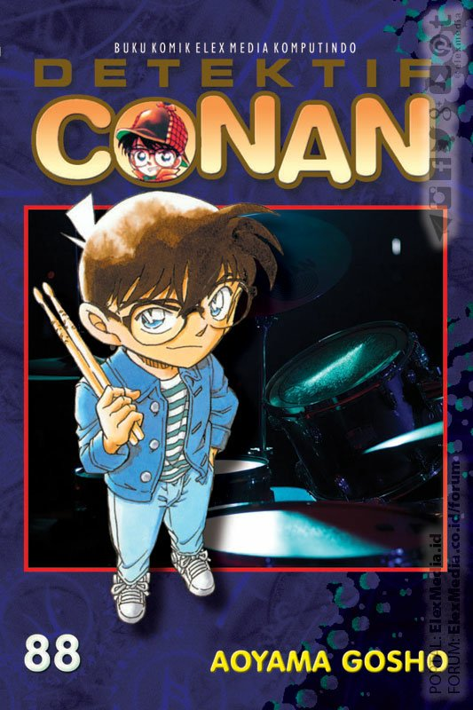

Detective conan
|  | Author : Aoyama Gosho Gosho Aoyama born June 21, 1963 is a Japanese manga artist best known for his manga series Detective Conan (1994 s/d present), known as Case Closed in some English-speaking countries. As of 2017, his various manga series had a combined 200 million copies in print worldwide synopsis : Shinichi Kudo, a seventeen year old master detective, had it all. He could solve any case brought to his attention and in record time. His highschool friend, Ran, is a karate expert, and her father is a bumbling P.I. who is driven crazy by the fact that Shinichi gets all of the great cases. One day, while Shinichi and Ran are at an amusement park, the pair become separated. Shinichi catches wind of a dirty deal going down, and spies on a pair of men in dark trenchcoats. He's caught and the men use an experimental poison on him, intending to kill him. However, things don't work exactly as planned. When Shinichi comes to his senses, he finds he's shrunken down to the size of a fourth grader. He goes to the goofball inventor that lives next door to him for help, and the inventor agrees to give him a hand. When Ran comes looking for Shinichi, he and the inventor come up with a story saying that Shinichi is a child named Conan Edogawa (Conan as in Sir Arthur Conan Doyle). |